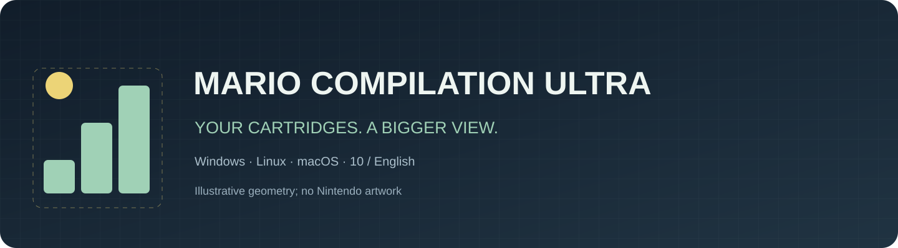
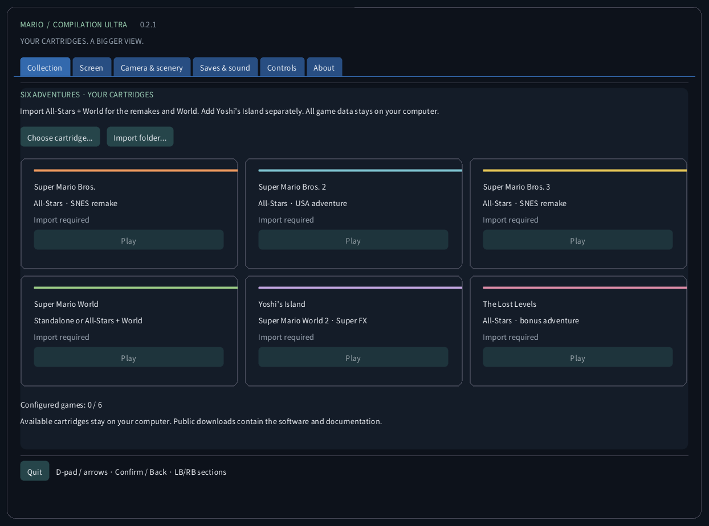
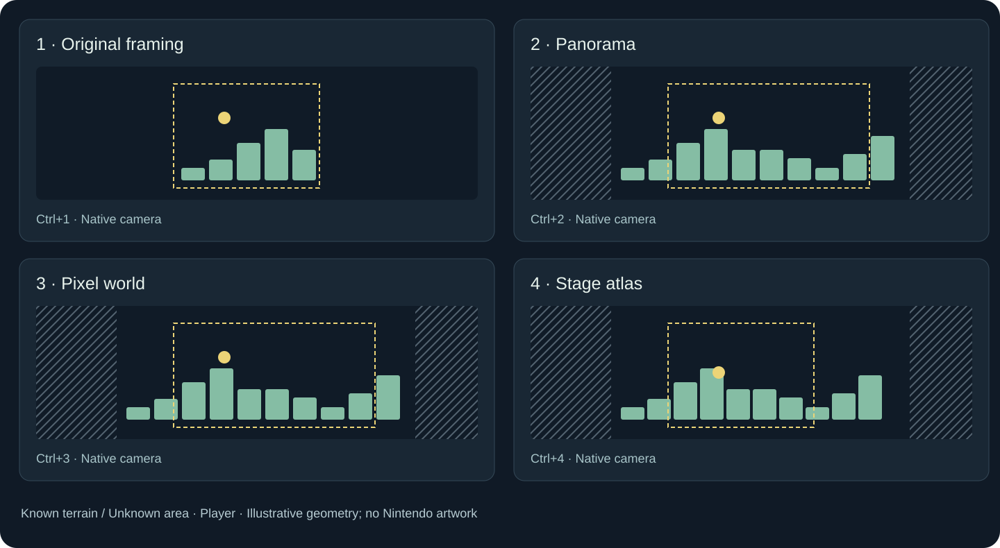
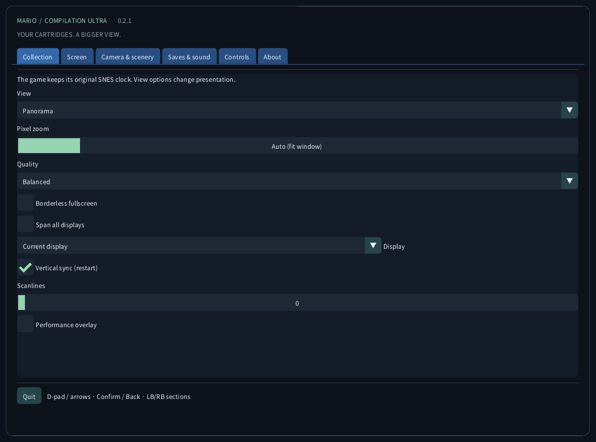
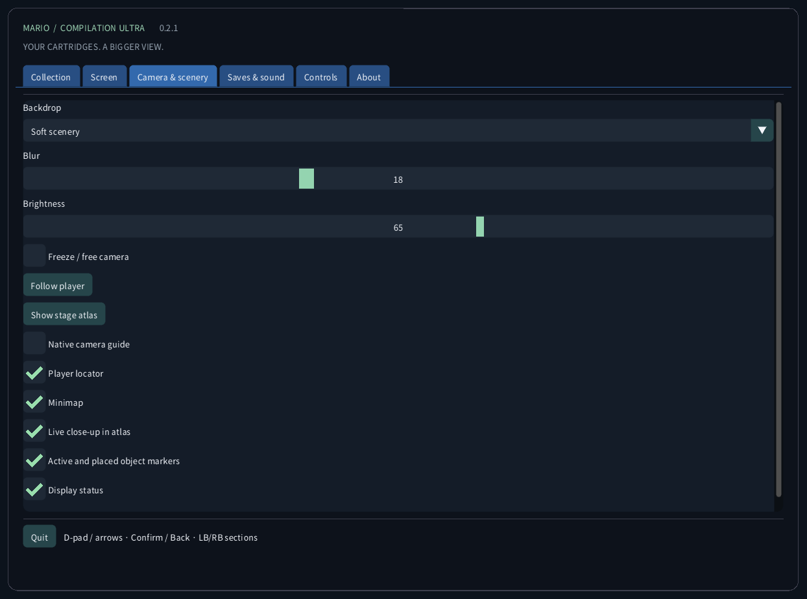
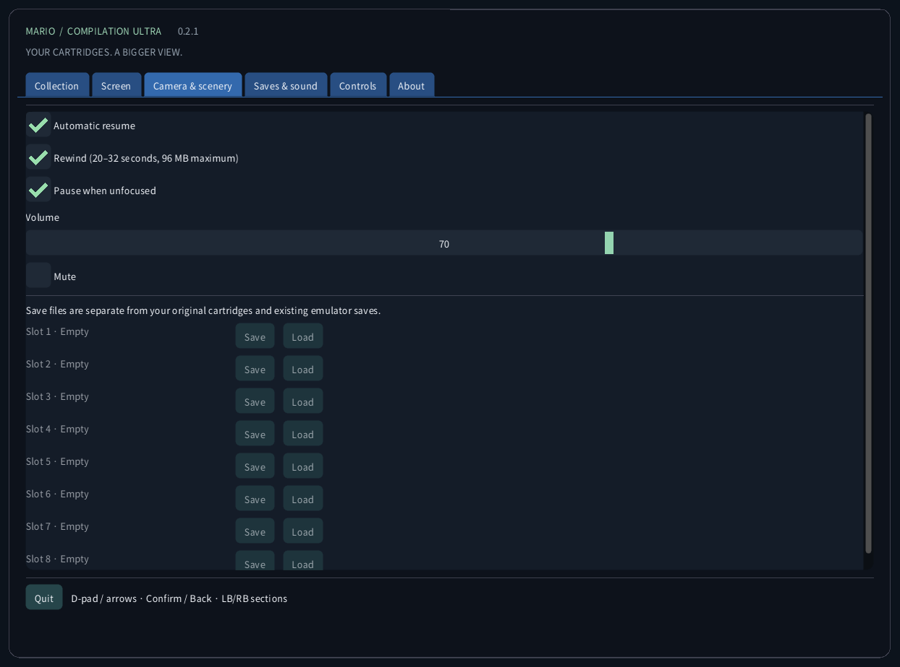
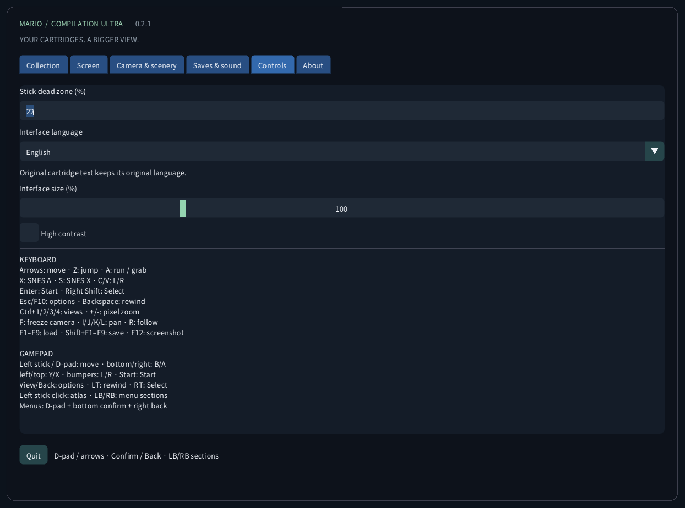
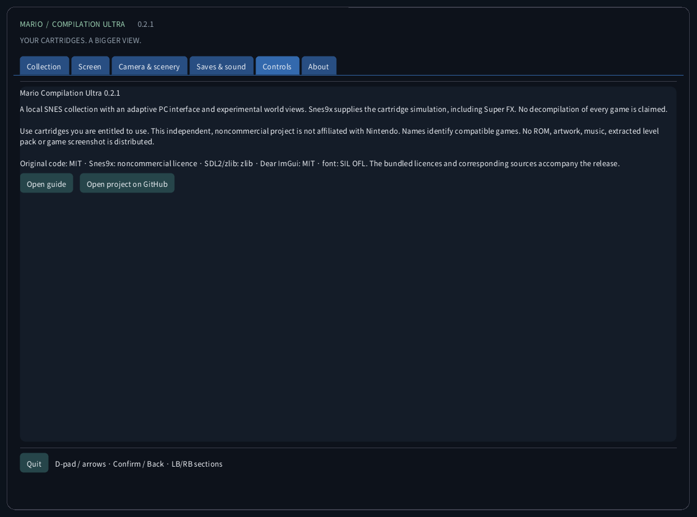

Mario Compilation Ultra 0.2.1
A local SNES collection with an adaptive PC interface and experimental world views. Snes9x supplies the cartridge simulation, including Super FX. No decompilation of every game is claimed.
Download and desktop startupDownload and desktop startup
- Download the package for your computer and extract the entire ZIP. Keep the executable, SDL library, assets and guides together. Windows: open MarioCompilationUltra.exe. Linux: run Play.sh. Mac: open the app.
- Import your own .sfc, .smc or single-cartridge .zip with Choose cartridge, Import folder, or drag and drop. The file picker opens the app’s local data folder. Compatible cartridges placed directly there are detected at the next launch.
- All-Stars + Super Mario World supplies Mario Bros. 1, the USA Mario Bros. 2, Mario Bros. 3, World and The Lost Levels. Add Yoshi’s Island separately. Choose Play, then Enter or Start at the original title screen; press again if an attract demo is playing.
Windows: run Install-Windows.ps1 to copy the complete package into your user’s Programs folder and create a desktop shortcut. Linux: run Install-Linux.sh to register this portable folder in the application menu and on the desktop. Mac: move the app to Applications and create a desktop alias. Keep the chosen portable folder in place.
Windows: powershell -NoProfile -ExecutionPolicy Bypass -File .\Install-Windows.ps1 Linux: sh ./Install-Linux.sh

Packages and validation
- Windows x64: local desktop launch and cartridge runtime checked; automated tests also run.
- Linux x64: automated build and ROM-free checks. Gameplay on a physical Linux desktop remains untested.
- macOS Intel x64 and Apple Silicon arm64: EXPERIMENTAL, NOT TESTED ON A PHYSICAL MAC. Automated runner checks cover building and the ROM-free interface. Packages are ad-hoc signed, not notarized; controller, sound, graphics and Gatekeeper remain unverified on real hardware.
View modes

Panorama is the default view. In Pixel world, choose Auto (fit window) for the largest whole-number zoom that shows the original frame. Manual zooms 1–8 are still available. Observed atlases fit explored camera bounds; World fits its loaded area. Decorative scenery outside the original camera repeats a safe displayed region.
World’s atlas covers the currently loaded area, not every area of the game at once. Mario 1, Lost Levels, Mario 2, Mario 3 and ordinary Yoshi scenes build a map from observed terrain as you move. Unknown areas stay hatched. Outside the original camera, effects and sprites may differ. Special projections fall back to the original image.
Expanded memory profiles and automatic All-Stars selection target the listed US editions. A recognized edition without a verified profile uses original framing. Interface translation does not translate the commercial cartridge’s story or graphics. No new native decompilation of all five games is claimed.
| CRC32 | SNES |
|---|---|
f84305b1 | All-Stars + World (US) |
925637c7 | All-Stars (US) |
b19ed489 | Super Mario World (US) |
d138f224 | Yoshi’s Island 1.0 (US) |
cf98ddaa | Yoshi’s Island 1.1 (US) |
Controls
KEYBOARD Arrows: move · Z: jump · A: run / grab X: SNES A · S: SNES X · C/V: L/R Enter: Start · Right Shift: Select Esc/F10: options · Backspace: rewind Ctrl+1/2/3/4: views · +/-: pixel zoom F: freeze camera · I/J/K/L: pan · R: follow F1–F9: load · Shift+F1–F9: save · F12: screenshot GAMEPAD Left stick / D-pad: move · bottom/right: B/A left/top: Y/X · bumpers: L/R · Start: Start View/Back: options · LT: rewind · RT: Select Left stick click: atlas · LB/RB: menu sections Menus: D-pad + bottom confirm + right back
Saves & sound
Nine manual slots per game, automatic resume, battery SRAM and a bounded rewind history are available. Rewind uses at most 96 MiB for roughly 20–32 seconds. F1–F9 load; Shift+F1–F9 save. States are checked against cartridge CRC, engine version and integrity. Your other emulators’ saves are kept separate.
Local files
This folder contains settings.ini, local cartridge references, states/, saves/ and screenshots/. Imports do not upload your cartridge or modify the original file. Back up this folder before moving computers. Save states depend on the exact cartridge and engine; battery SRAM is a separate file.
Windows: %APPDATA%/ValentinWittwe/MarioCompilationUltra/ Linux: ~/.local/share/ValentinWittwe/MarioCompilationUltra/ macOS: ~/Library/Application Support/ValentinWittwe/MarioCompilationUltra/
An explicit --data-dir folder overrides this default. Windows shortcut updates preserve that option. The Local files page shows the folder actually used by your running app.
If a game still asks for importing
Choose cartridge again if its file was moved or a drive is disconnected. ZIPs must contain one .sfc or .smc and use stored or DEFLATE compression without encryption. Check the supported header/edition list. A missing font or SDL library usually means only the executable was extracted; extract the complete package again.
Real interface gallery
These screenshots come from the actual application without a loaded cartridge. Diagrams use original illustrative geometry, not game artwork. Public downloads contain no Nintendo ROMs, sprites, music, extracted levels or gameplay captures.





Packages and validation · 0.2.1
Public checks cover 84 runtime/controller assertions, 166 messages in ten catalogs, font coverage and 240 actual interface captures. Private Windows checks cover six real cartridges, 2,160 display configurations, nine save slots, automatic resume, SRAM, rewind and controller events. These are bounded scenarios, not full campaign completion; physical gamepad presses and audible output are not certified. See the detailed report.
CTest / CI · Report · Build